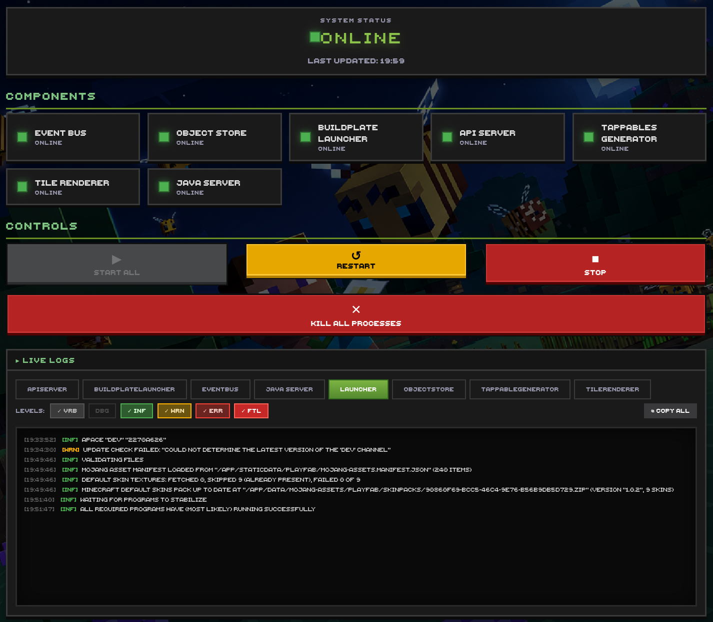

A server on your phone
The Apace Mobile Launcher runs the whole server on your Android phone. A PC or a Raspberry Pi works too — no cloud, no fees.

A community-made server for the game Mojang switched off in 2021. Run it on your phone or your own machine, patch your app, play with friends.
A small server app that stands in for Mojang's old servers — so the Minecraft Earth™ app on your phone works again.
The Apace Mobile Launcher runs the whole server on your Android phone. A PC or a Raspberry Pi works too — no cloud, no fees.
Point it at your copy of Minecraft Earth and the app connects to your server — Android and iOS.
Players, cosmetics, backups — everything from one web panel.
There is more than one project trying to bring Minecraft Earth™ back. Here is the honest difference.
Revival projects for this game keep appearing — and keep going quiet. Most of the ones you will find online are abandoned: several have not shipped a single change since 2021–2024, and the codebase Apace grew out of, Solace, has slowed down to the occasional maintenance fix. Apace is the one that never stopped: it is built, fixed and shipped in the open, week after week.
Recent months shipped multiplayer join codes, trading posts, a working iOS client, a cosmetics marketplace and face customization — every change landing in public commits with green CI builds.
Check the commit history of any alternative revival project before you spend an evening on it. Many have been untouched for years — dead links, dead servers, no one answering issues.
Beyond keeping the game alive: a full web panel, a mobile launcher that needs no PC, Android and iOS patchers, and self-hosting that works on everything from a phone to a home server.
You control everything from one dashboard. Real screens:



The easiest way in is the phone in your pocket. Prefer a PC or a board? One command.

One app does everything. It downloads the server, runs it and shows the same web panel full-screen — your phone becomes the server, and Minecraft Earth™ on it connects to your own world. Friends join from their own devices once the game port is reachable.
No PC, no Docker, no root, no Termux. The server starts when you open the app and stops by itself to save battery.
Same panel, same server — on a Linux machine, macOS or Windows.
curl -sSL https://raw.githubusercontent.com/ApaceProject/Apace/main/install.sh | bashiwr https://raw.githubusercontent.com/ApaceProject/Apace/main/install.ps1 | iexPatching needs your own legally obtained copy of Minecraft Earth™ (Android APK or iOS IPA). Where to get one and how the patch works: the repo's Installation.md.
For the curious and the skeptical — what is actually running when you press Start.
An ASP.NET Core (.NET 10) web panel and API, with a Fabric mod
running inside a Minecraft Java server as the game backbone. Ships as
Docker images (ghcr.io/apaceproject/apace), deploys via
Docker Compose or the install script, and can update itself in place
from the panel. Ports: 5000 panel · 1808 API ·
19132/udp Bedrock join.
Rebuilds your own copy of Minecraft Earth™ 0.33.0: apktool
decode/rebuild, aapt2 + zipalign shipped in the
image, uber-apk-signer re-sign. Every server endpoint is rewritten —
locator, XAL/SISU sign-in, Xbox Live, PlayFab. On iOS the IPA is
re-packed and its binaries pseudo-signed with ldid so the
Xbox keychain entitlements survive a Sideloadly/SideStore re-sign.
An Android app that boots Ubuntu ARM64 under PRoot, adds OpenJDK 17
and the .NET 10 runtime, then runs the real server and shows the panel
in an immersive WebView. The Dev channel applies the full
ghcr.io image filesystem (layer-cached, so updates download
only what changed). targetSdk 28 is intentional — like
Termux, so PRoot may exec() from app storage.
GitHub Actions builds a multi-arch (amd64 + arm64) Docker image on
every push to dev, and the launcher APK on every push to the
launcher repo. Every change lands in public history — nothing ships
from a black box.
MIT-licensed, community-driven, built on Solace. Third-party components (PRoot, Ubuntu, .NET, OpenJDK) stay under their own licenses.